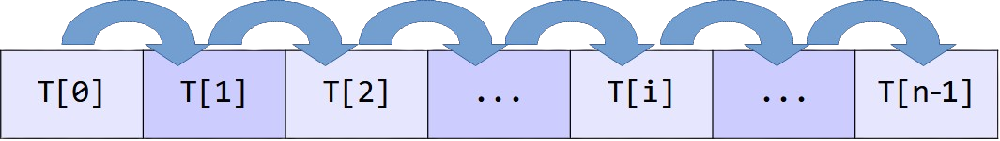

Parcours séquentiel d'un tableau
Cours
Le parcours séquentiel d'un tableau consiste à examiner les éléments d'un tableau les uns après les autres, du premier au dernier. C'est l'une des opérations fondamentales de l'informatique. Cette approche est simple mais très efficace pour résoudre de nombreux problèmes : rechercher une valeur, calculer la somme ou la moyenne des éléments, trouver le maximum ou le minimum, etc.

Principe
On a vu dans le chapitre sur les types construits comment parcourir un tableau Python avec une boucle while (parcours par indice) ou for (parcours par indice ou par valeur) pour accéder à chaque élément du tableau dans l'ordre.
Il faut gérer l'indice de boucle i pour qu'il parcourt toutes les positions des valeurs du tableau T, c'est-à-dire l'initialiser à 0 puis l'incrémenter à chaque passage dans la boucle (i = i + 1) jusqu'à ce qu'il dépasse len(T) - 1. T[i] permet d'accéder à la valeur du tableau qui se trouve à la position i.
Avec for i in range(len(T)), l'indice de boucle i prend automatiquement les valeurs allant de 0 à len(T) - 1. T[i] permet d'accéder à la valeur du tableau T qui se trouve à la position i.
 C'est un piège courant de confondre les parcours par indices (boucle
C'est un piège courant de confondre les parcours par indices (boucle while i < len(T)ou for i in range(len(T))) avec les parcours par valeur (for elem in T). Utiliser les bons noms de variable de boucle, iou elem, evite les confusions !
Complexité
Cours
Tous les cas de parcours séquentiel d'un tableau étudiés dans ce chapitre, ont une complexité linéaire, c'est-à-dire en \(O(n)\) (où \(n\) est le nombre d'éléments du tableau).
Le nombre d'opération, et donc le temps d'exécution de l'algorithme, est proportionnel au nombre d'éléments du tableau : si le nombre d'élément double, le temps d'exécution double également.
Recherche d'une valeur
Le but est de déterminer si une valeur donnée est présente dans un tableau. L'algorithme renvoie True ou False si la valeur est trouvée ou pas, ou dans certains cas la position de la valeur dans le tableau.
L'algorithme est simple : on parcourt chaque élément du tableau jusqu'à trouver la valeur. Une fois la valeur trouvée, on renvoie True ou la position de l'élément. Si on a parcouru tout le tableau sans jamais trouver la valeur, on renvoie False ou une valeur spécialement choisie pour indiquer qu'elle n'est pas présente (None, -1, etc.)
Il faut finir de parcourir le tableau entièrement avant d'être sûr que la valeur n'est pas dans le tableau. Attention à l'indention !
L'algorithme se traduit simplement en Python avec une boucle for elem in T :
def recherche_occurrence(T, valeur):
""" Renvoie True si valeur est présent dans le tableau T, False sinon"""
for elem in T:
if elem == valeur:
return True
return False # attention à l'indentation
# Exemples
>>> recherche_occurrence([5, 12, 3, 8, 15, 3], 8)
True
>>> recherche_occurrence([5, 12, 3, 8, 15, 3], 20)
False
Pour renvoyer la position de la valeur au lieu de Trueou False, il faut alors parcourir le tableau par indice :
def recherche_indice(T, valeur):
""" Renvoie l'indice de la première occurrence de valeur dans le tableau T,
ou -1 si la valeur n'est pas présente
"""
for i in range(len(T)):
if T[i] == valeur:
return i
return -1 # attention à l'indentation
Exemples :
Une variante classique de cet algorithme consiste à chercher l'indice de la dernière occurrence d'une valeur dans un tableau. Dans ce cas, une solution consiste à parcourir les indices en ordre décroissant avec for i in range(len(T) - 1, -1, -1).
Étudions maintenant la complexité (ou coût) temporelle de l'algorithme pour un tableau de grande taille \(n\). Dans le pire des cas, la valeur recherchée n'est pas présente dans le tableau, la boucle for elem in T (ou for i in range(len(T))) se répète donc \(n\) fois, et à chaque tour de boucle la fonction fait une comparaison. Une fois sortie de la boucle, la fonction' renvoie False, c'est une opération supplémentaire. Le nombre d'opération est donc \(n + 1\). La complexité est donc linéaire en \(O(n)\).
Note: les fonctions Python val in T et T.index(val) permettent de chercher la valeur val dans le tableau T.
Calcul d'une somme ou d'une moyenne
Le but est de calculer la somme ou la moyenne de toutes les valeurs d'un tableau.
Dans ce cas là, inutile de connaître les positions des éléments du tableau, uniquement leur somme importe. Une seule difficulté, il faut penser à gérer le cas du tableau vide quand on calcule la moyenne.
La traduction du calcul de la somme en Python est directe :
def calcul_somme(T):
""" Renvoie la somme des valeurs d'un tableau T"""
somme = 0
for elem in T:
somme = somme + elem
return somme
Exemple :
Pour le calcul de la moyenne, c'est presque la même chose. Une fois la somme calculée, il suffit de diviser par le nombre d'éléments du tableau. Attention, il faut penser à gérer le cas du tableau vide pour éviter de lever une erreur ZeroDivisionError sur la division quand len(T) est égal à zero, par exemple en renvoyant None ou avec une du genre assert len(T) != 0.
def calcul_moyenne(T):
""" Renvoie la moyenne des valeurs d'un tableau T ou None si le tableau est vide"""
if len(T) == 0:
return None
somme = 0
for element in T:
somme = somme + elem
return somme / len(T)
Exemple :
Étudions la complexité (ou coût) temporelle de l'algorithme pour un tableau de grande taille \(n\). Il faut 1 opération pour initialiser la somme à 0. Ensuite la boucle for elem in T se répète \(n\) fois, et à chaque tour de boucle l'algorithme fait une addition. Une fois sortie de la boucle, la fonction renvoie la somme (ou la somme divisée par le nombre d'éléments), c'est une opération supplémentaire. Le nombre d'opération est donc \(n + 2\). La complexité est donc linéaire en \(O(n)\).
Recherche d'un extremum (maximum ou minimum)
Le but est de trouver la plus grande (ou la plus petite) valeur dans un tableau. Dans certains cas, on demande la position de l'extremum au lieu de sa valeur.
Après avoir initialisé le maximum (ou minimum) à la première valeur du tableau (T[0]), l'algorithme parcourt chaque élément du tableau et remplace le maximum (respectivement le minimum) chaque fois qu'un élément est plus grand (resp. plus petit). Une fois le tableau entièrement parcouru, le maximum (resp. minimum) aura bien la valeur la plus grande (resp. la plus petite) du tableau.
Il faut traiter le cas du tableau vide séparément pour éviter de lever un erreur IndexErrorsur T[0] au début de l'algorithme par exemple en renvoyant Noneou avec une assertion du genre assert len(T) != 0.
Traduit simplement en Python :
def recherche_maximum(T):
""" Renvoie la valeur maximale d'un tableau T"""
if len(T) == 0:
return None
maxi = T[0]
for i in range(1, len(T)):
if T[i] > maxi:
maxi = T[i]
return maxi
Exemple :
La recherche du minimum est très similaire :
def recherche_minimum(T):
""" Renvoie la valeur minimale d'un tableau T"""
if len(T) == 0:
return None
mini = T[0]
for i in range(1, len(T)):
if T[i] < mini:
mini = T[i]
return mini
Exemple :
 Éviter d'utiliser les noms de variable
Éviter d'utiliser les noms de variable maxet min qui sont des mots réservés Python.
Une variante de la recherche d'extremum consiste à renvoyer l'indice plutôt que la valeur :
def indice_maximum(T):
"""Retourne l'indice du maximum"""
indice_max = 0
for i in range(1, len(T)):
if T[i] > T[indice_max]:
indice_max = i
return indice_max
Exemple :
L'étude de la complexité est similaire aux précédentes. 1 opération pour allouer la première valeur du tableau à la variable maximum (ou minimum), \(n-1\) itération pour la boucle for i in range(1, len(T)) où se répètent 1 comparaison et 1 affectation (au pire). Avec le return final, on a donc \(2 + (n-1) × 2\), donc encore une complexité linéaire en \(O(n)\).